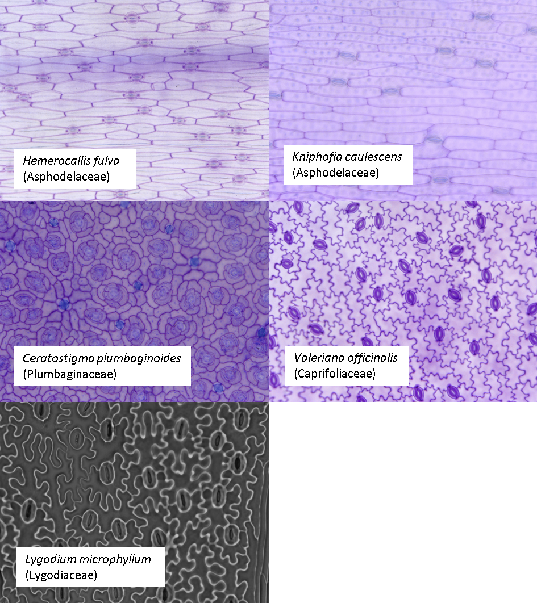
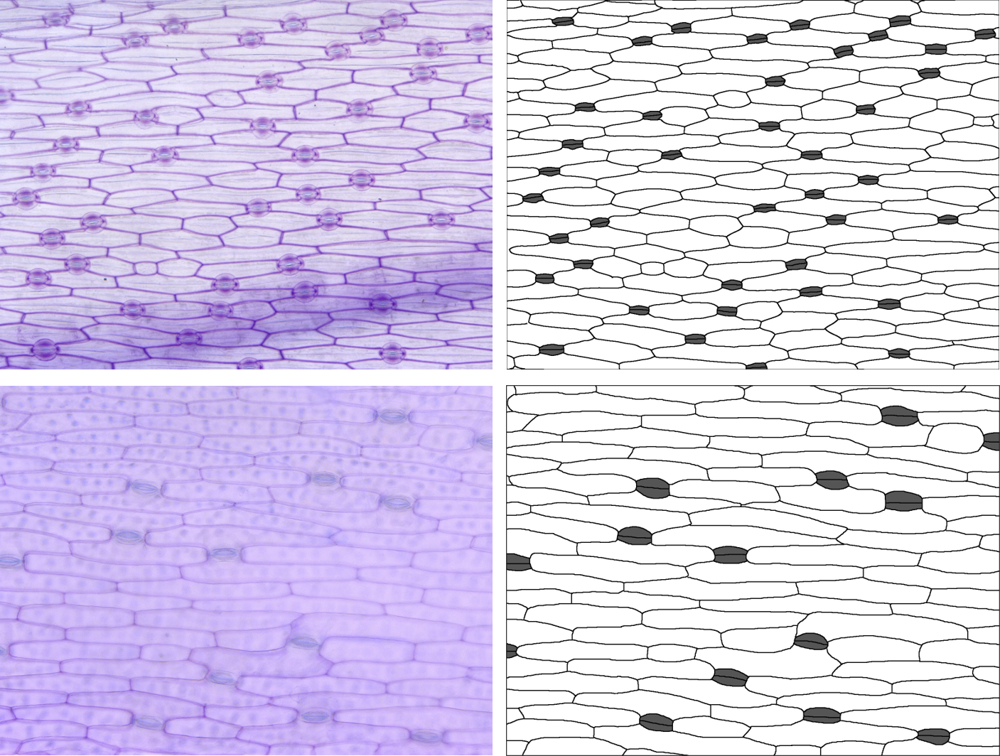
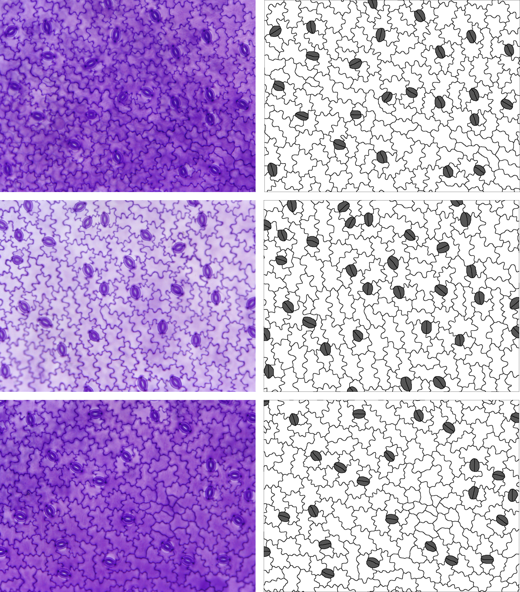
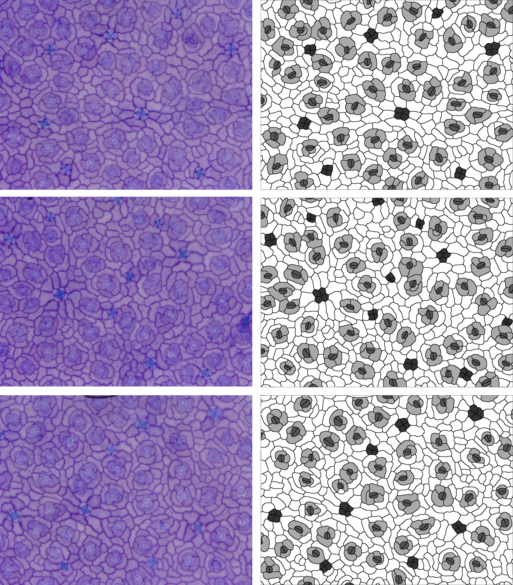
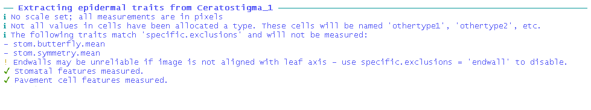
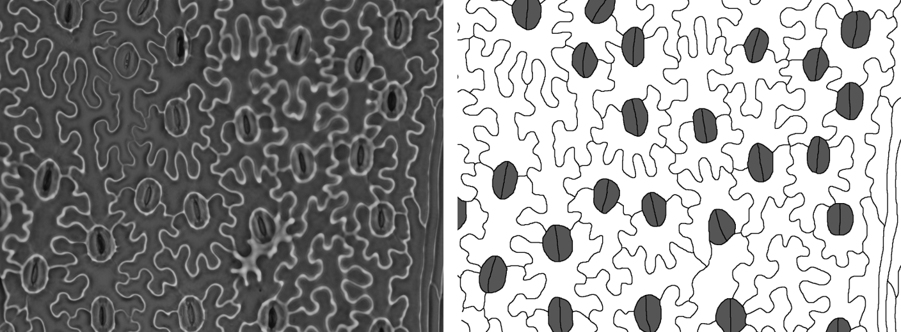
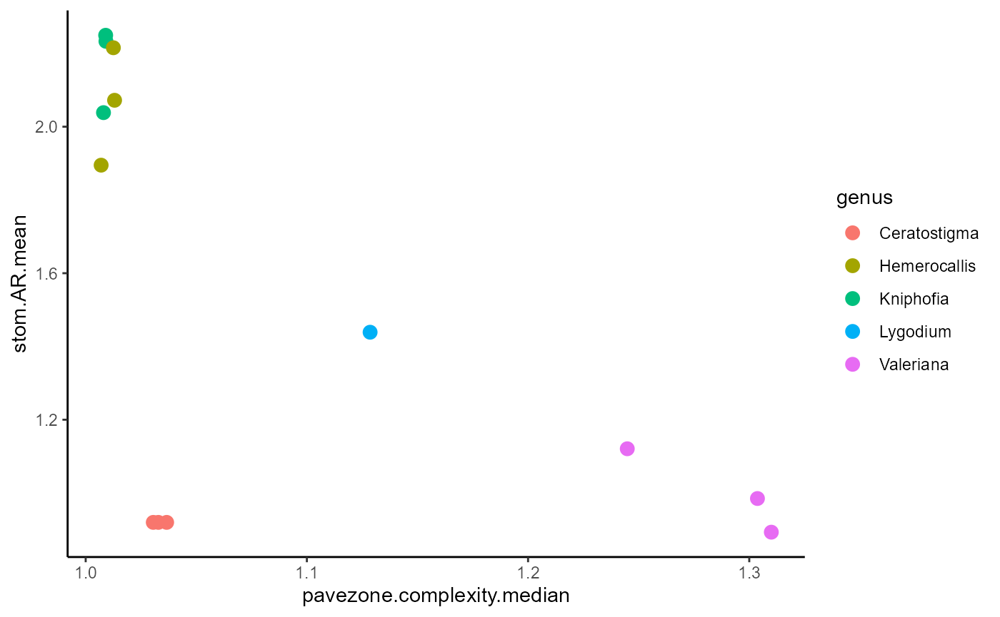
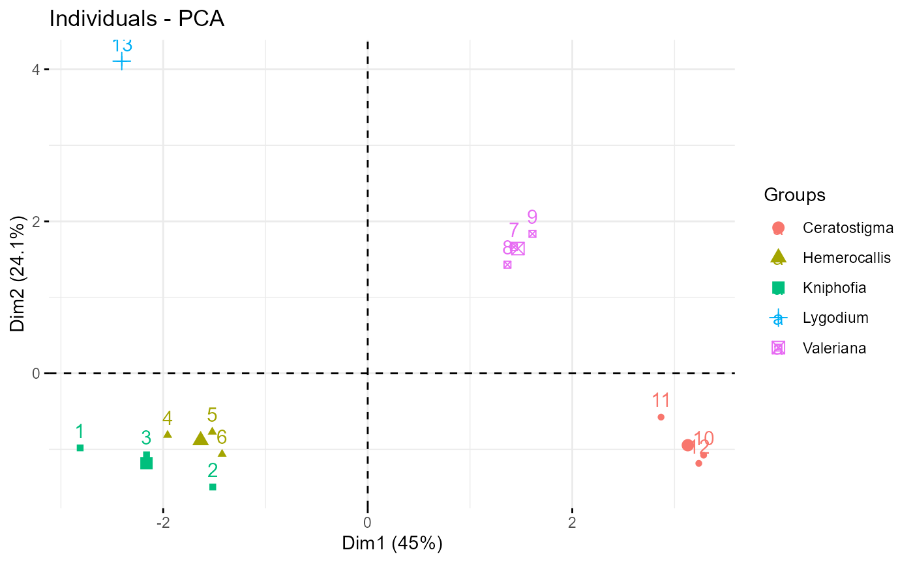
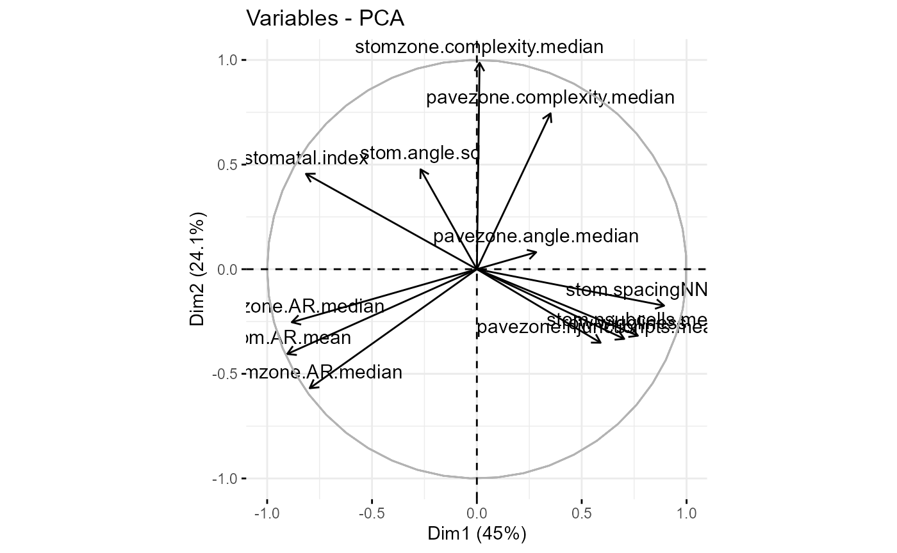

measuring-different-morphologies.RmdIn ‘Introduction to epidermalmorph’, we looked at a workflow for one
group of plants, with a specific type of stomatal morphology: subsidiary
cells arranged on either side of the guard cells, with stomata aligned
in rows and traced as single cells (both guard cells and the pore
forming the same polygon). However, epidermalmorph can be
used to extract epidermal traits from a wide range of different plants -
this is what we will do here.
Let’s start by looking at our example images; we are going to look at 5 species of plant with 1-3 images per species; these images are all available in the Supporting Information of: Vőfély, R. V., Gallagher, J., Pisano, G. D., Bartlett, M., & Braybrook, S. A. (2019). Of puzzles and pavements: a quantitative exploration of leaf epidermal cell shape. New Phytologist, 221(1), 540-552.

Some of these species have subsidiary cells, some have randomly
aligned stomata and one (Ceratostigma) has salt glands, clustered in
groups of four. What does this mean for using
epidermalmorph?
Let’s go through species by species, but first we’ll set up somewhere for our extracted trait data to live:
traits <- list()
dir <- "images"In these two species, there are no subsidiary cells, so
stom.symmetry.mean and stom.butterfly.mean
don’t make any sense - we’ll exclude them using the
specific.exclusions argument. Guard cells have been traced
as pairs (two cells rather than one), so we’ll set
paired.guard.cells to TRUE.
Note: this document suppresses the messages generated by
extract_epidermal_traits, but an example is shown for
Ceratostigma below.

files <- c("Kniphofia_1.tif","Kniphofia_2.tif","Kniphofia_3.tif",
"Hemerocallis_1.tif","Hemerocallis_2.tif","Hemerocallis_3.tif")
for (i in 1:length(files)){
p <- image_to_poly(dir, files[i])
id <- substr(files[i], 1, nchar(files[i])-4) #drop the .tif for the image ID
#append these results to the growing list of results
traits[[length(traits)+1]] <- extract_epidermal_traits(
image.ID = id,
cell.polygons = p$cells,
junction.points = p$junction_coords,
cells.present = c("pavement","stomata"),
cell.values = c(255,85),
paired.guard.cells = TRUE,
sd.measures = FALSE, #just to reduce the number of traits
specific.exclusions = c("symmetry", "butterfly")
)
}In this species, there are no subsidiary cells, so
stom.symmetry.mean and stom.butterfly.mean
don’t make any sense - we’ll exclude them using the
specific.exclusions argument. The stomata are randomly
oriented, so we’ll set stomatal.north to 0. They are also
in pairs (two cells rather than one), so we’ll set
paired.guard.cells to TRUE.

files <- c("Valeriana_1.tif","Valeriana_2.tif","Valeriana_3.tif")
for (i in 1:length(files)){
p <- image_to_poly(dir,files[i])
id <- substr(files[i], 1, nchar(files[i])-4) #drop the .tif for the image ID
traits[[length(traits)+1]] <- extract_epidermal_traits(
image.ID = id,
cell.polygons = p$cells,
junction.points = p$junction_coords,
cells.present = c("pavement","stomata"),
cell.values = c(255,85),
paired.guard.cells = TRUE,
stomatal.north = 0,
sd.measures = FALSE, #to reduce the number of traits
specific.exclusions = c("symmetry","butterfly","endwall"))
}In this species, there are subsidiary cells, but they form an
encircling ring, so stom.symmetry.mean and
stom.butterfly.mean don’t make any sense here either -
we’ll exclude them again using the specific.exclusions
argument.

Again, the stomata are randomly oriented, so we’ll set
stomatal.north to 0. They are also in pairs (two cells
rather than one), so we’ll keep paired.guard.cells set to
TRUE. There is also another type of cell - the salt glands.
First, let’s see what happens when we ignore it:
files <- c("Ceratostigma_1.tif","Ceratostigma_2.tif","Ceratostigma_3.tif")
#just the first one as a test
p <- image_to_poly(dir,files[1])
id <- substr(files[1], 1, nchar(files[1])-4) #drop the .tif for the image ID
extract_epidermal_traits(
image.ID = id,
cell.polygons = p$cells,
junction.points = p$junction_coords,
cells.present = c("pavement","stomata","subsidiary"),
cell.values = c(255,85,170),
paired.guard.cells = TRUE,
stomatal.north = 0,
sd.measures = FALSE, # to reduce the number of traits
specific.exclusions = c("symmetry","butterfly")
) %>% str() The salt glands still get measured (as
othertype1), but it would be nice to specify a name, so
here we’ve added them to the cells.present and
cell.values arguments. We also get a warning about endwall
angles not being reliable, so we’ll exclude anything to do with endwalls
using the specific.exclsions argument - we can use a
keyword rather than the full trait names.
for (i in 1:length(files)){
p <- image_to_poly(dir,files[i])
id <- substr(files[i], 1, nchar(files[i])-4) #drop the .tif for the image ID
traits[[length(traits)+1]] <- extract_epidermal_traits(
image.ID = id,
cell.polygons = p$cells,
junction.points = p$junction_coords,
cells.present = c("pavement","stomata","subsidiary","saltgland"),
cell.values = c(255,85,170,50),
paired.guard.cells = TRUE,
stomatal.north = 0,
sd.measures = FALSE, #just to reduce the number of traits
specific.exclusions = c("symmetry","butterfly","endwall"))
}One last example, because in this one the image has been taken with
the stomata aligned vertically, so we need to set
image.alignment to “vertical” (the default is “horizontal”,
but we can also set “none”). The raw image is also quite different to
the others, but the tracing follows the same principles.

files <- c("Lygodium_1.tif")
p <- image_to_poly(dir, files)
id <- substr(files, 1, nchar(files)-4) #drop the .tif for the image ID
traits[[length(traits)+1]] <- extract_epidermal_traits(
image.ID = id,
cell.polygons = p$cells,
junction.points = p$junction_coords,
cells.present = c("pavement","stomata"),
cell.values = c(255,85),
paired.guard.cells = TRUE,
image.alignment = "vertical" ,
sd.measures = FALSE, #just to reduce the number of traits
specific.exclusions = c("symmetry","butterfly"))Now we can compare these species, but there are two things we have to
be careful of. 1. Not all species have all traits measured 2. The scale
for these images is not consistent - we could have passed the scales
individually using image.scale but several of the extracted
traits are ratios and this scale-independent, so we can actually still
compare them even if we do not know the scale of each image. These
scale-independent traits include: index traits (e.g. stomatal index),
complexity traits (e.g. pavezone cell complexity), aspect ratio and
traits (e.g. stomatal complex aspect ratio), number of junction points,
endwall angles, stomatal symmetry, and the stomatal butterfly metric
(ratio of guard cell to lateral subsidiary cell lengths).
Let’s bind all our extracted traits into a dataset and select only those traits that are scale-independent AND were measured for all images:
traits_all <- traits[[1]]$image_data
for (i in 2:13){
traits_all <- bind_rows(traits_all, traits[[i]]$image_data)
}
#select only the scale-independent traits (ratios) using the trait key
scale_independent_traits <- trait_key$trait[which(trait_key$scaledependent==0)]
traits_scaleind <- traits_all[,which(colnames(traits_all) %in% scale_independent_traits)]
traits_nona <- traits_scaleind[ , colSums(is.na(traits_scaleind)) == 0]
#add genus using the underscore as a way of splitting the IDs
traits_nona$genus <- sapply(strsplit(traits_nona$image.ID, "_"),"[[",1)
#plot two of these
ggplot(traits_nona, aes(x=pavezone.complexity.median,
y=stom.AR.mean,
colour=genus)) +
geom_point(size=3) +
theme_classic()
We might then do a PCA or an LDA to reduce the dimensionality and visualise our trait-space - this is where this example finishes.
## Importance of components:
## PC1 PC2 PC3 PC4 PC5 PC6 PC7
## Standard deviation 2.3243 1.6997 1.4457 1.00774 0.61103 0.35023 0.20469
## Proportion of Variance 0.4502 0.2407 0.1742 0.08463 0.03111 0.01022 0.00349
## Cumulative Proportion 0.4502 0.6909 0.8651 0.94974 0.98085 0.99108 0.99457
## PC8 PC9 PC10 PC11 PC12
## Standard deviation 0.1960 0.1387 0.07624 0.03925 0.01432
## Proportion of Variance 0.0032 0.0016 0.00048 0.00013 0.00002
## Cumulative Proportion 0.9978 0.9994 0.99985 0.99998 1.00000
#basic visualisation
fviz_pca_ind(traits_pca, habillage=traits_nona$genus)
fviz_pca_var(traits_pca)